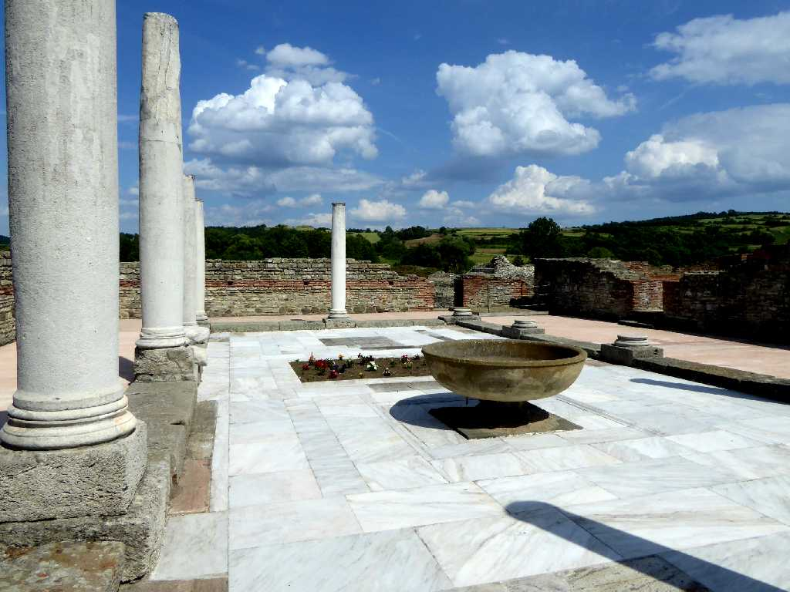
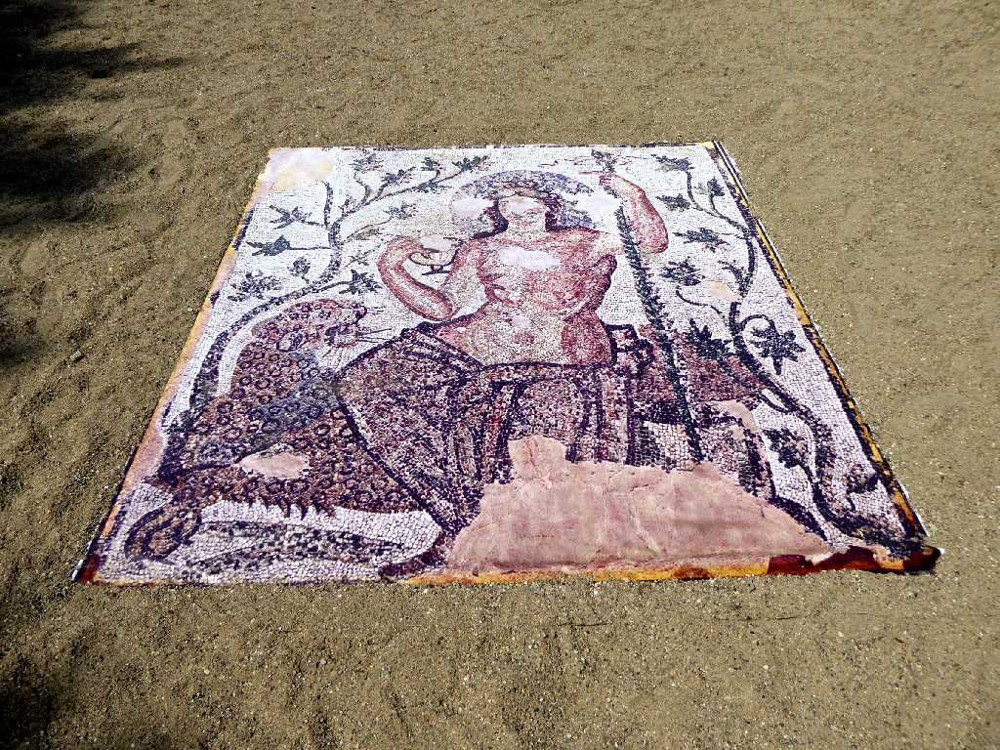
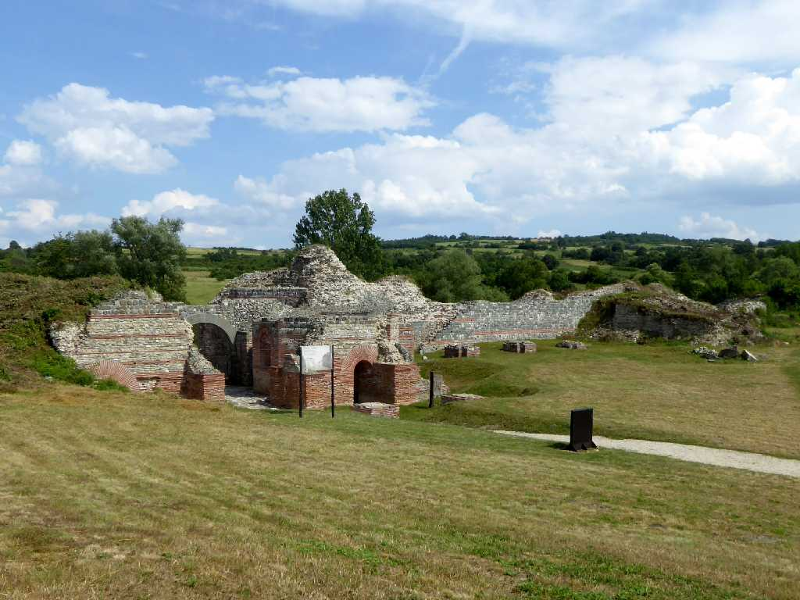
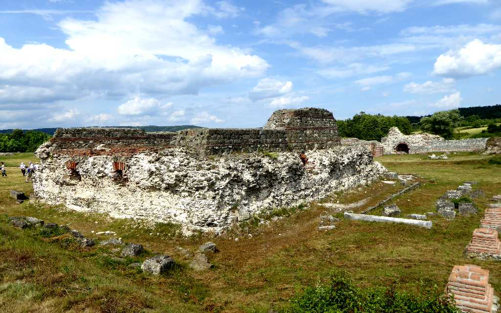
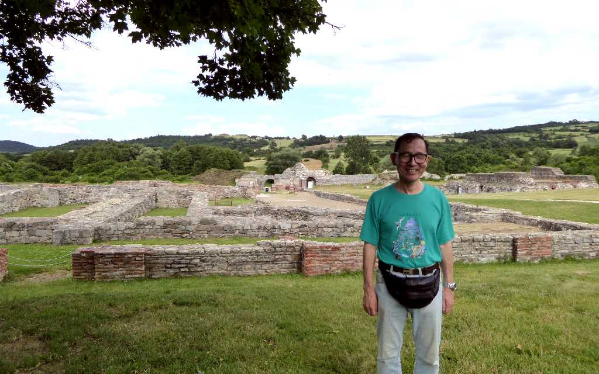

Galerius Palace Romuliana Gamzigrad Zaječar
古代ローマ皇帝ガレリウスの宮殿

Mosaic Galerius Palace Romuliana
ローマ皇帝ガレリウスの生地に４世紀創建された宮殿でロムリアーナ遺跡は母ロムリ(Romuli)に由来する

Main Gate of Galerius Palace Romuliana

Jupiter Temple Galerius Palace Romuliana
宮殿中央にあるジュピター神殿にはジュピターとガレリウスの像が置かれていたと考えられている

June 11 2016 Galerius Palace